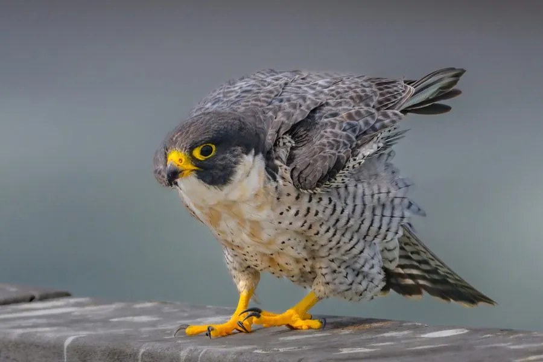

鸟类 · 动物界
游隼 Falco peregrinus

俯冲速度最快的动物，短距离冲刺可达 300 km/h 以上，是全球广泛分布的猛禽，也是城市高楼的常客。
- 分类
- 门脊索动物门纲鸟纲目隼形目科隼科属隼属
- 栖息环境
- 山地悬崖、河谷、海岸以及城市高楼与桥梁，只要有开阔的狩猎空间即可
- 地理分布
- 除南极洲外全球广泛分布，中国南北方均有记录，北方多为夏候鸟
- 保护级别
- IUCN 无危（LC）；中国国家二级保护动物
物种志
游隼体长 34–58 cm，翼展 74–120 cm，雌鸟体重约 700–1500 g，明显大于雄鸟。背部和翅膀呈深灰蓝色，腹部白色并密布横斑，脸颊两侧各有一道醒目的黑色“髭纹”，眼圈和蜡膜为黄色。它的翅膀尖长、胸肌发达，飞行时拍翅快而有力，是典型的空中猎手。
游隼是分布最广的鸟类之一，除南极洲外各大洲都能见到，中国北方多为夏候鸟、南方多为冬候鸟。它们以鸟类为主要食物，在空中追上猎物后收翅俯冲，用脚爪猛击其翅膀或背部。游隼多在悬崖、高楼或桥梁上营巢，每窝产卵 2–4 枚，孵化 29–33 天，育雏约 35–42 天。DDT 曾导致其卵壳变薄、全球种群崩溃，禁用后许多城市重新出现游隼的身影。
形态与习性
- 食性以鸟类为主，包括鸽、鸭、鸻鹬等，也捕食大型昆虫
- 体长34–58 cm
- 翼展74–120 cm
- 体重雄鸟约 330–1000 g，雌鸟约 700–1500 g
- 俯冲俯冲时速可达 300 km/h 以上
- 繁殖每窝产卵 2–4 枚，孵化 29–33 天
- 寿命野外约 15 年，圈养可超过 20 年
趣味知识
- 游隼俯冲时会收拢双翼、张开脚爪，用爪子猛击猎物的翅膀或背部。
- 为防止鸟群危及飞行安全，一些机场会驯养游隼驱赶场区上空的鸟。
- 游隼鼻孔内有一个骨质小锥，能减缓高速俯冲时进入鼻腔的气流冲击。
- DDT 曾让游隼卵壳变薄、种群锐减，禁用后它们重新成为许多城市的常客。